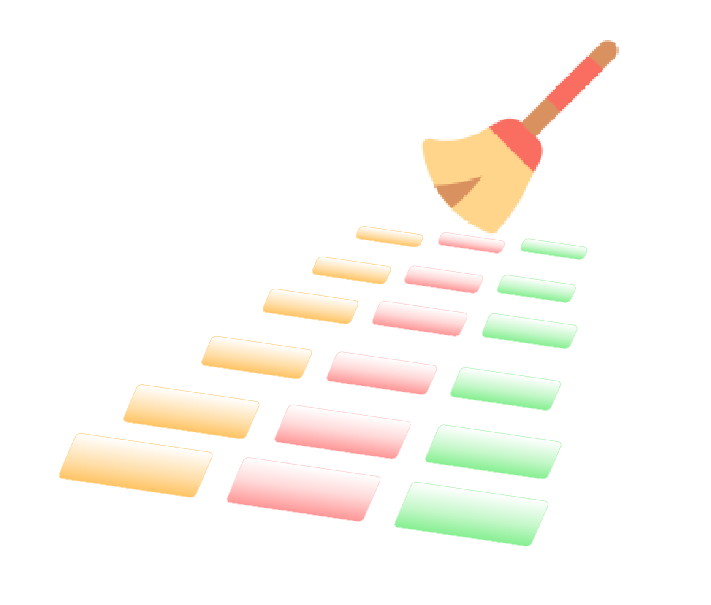

Sequence Quality - FastQC, MultiQC and Cutadapt

In this episode we will look at quality assessment of the sequencing data. We will begin with FastQC, a free program which will analyse raw sequence data and output a visual summary. Then we will introduce MultiQC, a useful tool which can be used to combine results from different software packages into a single, coherent report. Finally we will look at read cleaning.
Quality Assessment with FastQC
Quality assessment of high throughput sequencing data has been covered in depth and involves measurements of a number of sequence traits. FastQC is one of many options available for assessing the quality and is the one we will look at today. The output of FastQC is a visual representation of sequence quality which, if required, can then be used to investigate certain traits in more depth. FastQC provides a handy three colour binning system: green ticks for high quality, orange exclamation marks for middling quality that may require a manual investigation, and red crosses for low quality.
If a sample has low quality scores in one or more aspects, this does not necessarily mean we need to remove this sample from our analysis. The next steps of the workflow involve performing some sequence cleaning and trimming which may increase the overall quality of the sequence. However, it is still worth performing QC initially and comparing this to the post-cleaning sequence.
Generating FastQC reports
In a terminal window navigate to your RNA-seq directory. Ensure you have a sub-directory that contains your raw sequence files (name this Raw), and separate sub-directory in which to store quality control outputs (name this QC).
# While in the RNA-seq directory containing the directories Raw and QC:
fastqc -o QC/ Raw/*The FastQC tool will generate reports on all files within the directory Raw, and output them into the QC directory. You will see an output similar to:
Started analysis of SRR014335-chr1.fastq
Approx 5% complete for SRR014335-chr1.fastq
Approx 10% complete for SRR014335-chr1.fastq
Approx 15% complete for SRR014335-chr1.fastq
Approx 20% complete for SRR014335-chr1.fastq
Approx 25% complete for SRR014335-chr1.fastq
Approx 30% complete for SRR014335-chr1.fastq
Approx 35% complete for SRR014335-chr1.fastqIf we now look within the QC directory, we should see two types of files for each of our six samples. These should be called “sampleName_fastqc.html” and “sampleName_fastqc.zip”.
Viewing the FastQC results
The html file outputs from FastQC can be opened in a browser for viewing. For each sample we have an overview of the quality for different metrics. On the left hand side of the report is a navigation bar that works as a broad summary. An ideal sample would have green tick marks for every measurement, while a terrible sample would have red crosses for every measurement. Most samples will fall somewhere in between and there is an element of interpretation.

FastQC text output
FastQC outputs text files into a zipped directory. The text files contain detailed results of the various statistical tests done during QC. We might want to examine one or more of our QC reports in more detail, and here we will concatenate the QC reports from each of the six samples into a single text file called fastqc_summaries.txt.
Navigate to the QC directory containing the sampleName_fastqc.zip outputs for each sample. Unzip the files and use the ls command to see what files are created for each sample, then use the less command to preview the summary.txt file for the first sample (SRR014335-chr1_fastqc).
for filename in *.zip
do
unzip $filename
done
ls SRR014335-chr1_fastqc
# Should contain the files:
# fastqc_data.txt fastqc.fo fastqc_report.html Icons/ Images/ summary.txt
less SRR014335-chr1_fastqc/summary.txt
# Use "q" to quit out of the window when you are done. Create a single document that contains the information from summary.txt from all six samples, and name that document fastqc_summaries.txt
cat */summary.txt > ~/RNA_seq/QC/fastqc_summaries.txtOpen the fastqc_summaries.txt file and search for any of the samples that have failed the QC statistical tests.
MultiQC - multi-sample analysis
The MultiQC application will create a report based on all documents in a given directory. MultiQC will take inputs from many different software applications, including fastQC. The report is a concise, clear document that can be used to track samples as they progress through various stages of the analysis.
To generate the MultiQC report first navigate to the RNA_seq directory and create a new output directory called MultiQC, then copy all target files to that directory (initially target files will be the FastQC documents generated above). Finally, execute the multiqc command.
cd ~/RNA_seq/
mkdir MultiQC
cd MultiQC
cp -r ../QC/* ./
multiqc .
ls -F
# ls -F will show multiqc_data/ and multiqc_report.html
After each step in the analysis (e.g., read cleaning, adaptor trimming) we will copy over new reports and summaries to the MultiQC directory and re-run the multiqc command. New information will be appended to the MultiQC report at each stage.
Cleaning reads
In the previous section, we took a high-level look at the quality of each of our samples using FastQC. We visualized per-base quality graphs showing the distribution of read quality at each base across all reads in a sample and extracted information about which samples fail which quality checks. Some of our samples failed quite a few quality metrics used by FastQC. This doesn’t mean that our samples should be thrown out! It’s very common to have some quality metrics fail, and this may or may not be a problem for your downstream application.
In this section we will perform read cleaning using Cutadapt. Cutadapt will trim poor quality bases in a threshold-specific manner and will filter out poor quality reads. Cutadapt can be used to remove primers, poly-A tails, and adapter sequences (discussed below). See the full User guide to learn more about Cutadapt.
Cutadapt: Adapter trimming
Adapters are short, known sequences that become embedded in your reads as part of the sequencing process. Before we work with our reads we want to remove these adaptors. Because adapters are manually added to the sequencing reaction, we should know exactly what these sequences are. In our example, we know that the adapter sequences are AACCGGTT. If you do not have access to information about what adapters were used in your sequence, some software can detect certain adaptors (e.g., Trimmomatic, which has a library of Illumina adapter sequences - these will be screened against reads and if a match is detected, those adapters will be trimmed).
We will perform adapter trimming simultaneously with quality trimming, done below.
Cutadapt: Quality trimming
Quality trimming is the process of removing low-quality bases from the end of reads. Usually during sequencing it is the end (or start) of the read which has the lowest quality. By trimming only the low-quality ends of the reads, we improve our overall sequence quality without sacrificing too much data.
Here we will use Cutadapt and the -q flag to specify the lower threshold of quality we are willing to accept at the 3’ end of our reads. Two things to note are that a) we can apply the threshold cutoff to both the 5’ and the 3’ end, but for Illumina sequencing the 5’ end is usually high quality, and b) this requires our per-based quality scores to be encoded as phred quality + 33.
To begin, navigate to the RNA_seq directory and create a new directory called Trimmed which we will use to store our modified files. We will then use cutadapt and the “-q” flag to remove bases from the 3’ end of our reads if they have a phred quality score below 20. Simultaneously we will use the “-a” flag to remove our adaptors (supplied as AACCGGTT).
Cutadapt will produce a trimmed file as well as a summary in the form of a log file.
As a reminder, you should never modify your raw data (and should ideally have raw data backed up in a remote and secure location).
cd ~/RNA_seq
mkdir Trimmed
cutadapt -q 20 -a AACCGGTT -o Trimmed/SRR014335-chr1_cutadapt.fastq Raw/SRR014335-chr1.fastq > Trimmed/SRR014335-chr1.log
less Trimmed/SRR014335-chr1.logNow trim all samples in the Raw directory:
cd ~/RNA_seq/Raw
for filename in *.fastq
do
base=$(basename ${filename} .fastq)
cutadapt -q 20 -a AACCGGTT -o ../Trimmed/${base}.trimmed.fastq ${filename} > ../Trimmed/${base}.log
doneCutadapt: Filtering reads
Cutadapt can also filter reads. That is, reads which meet (or more often, fail to meet) a specific criteria are either discarded or redirected to a separate output file.
Examples of read filtering include using the -m flag to specify a minimum length. If reads are below a certain length, they will be discarded or redirected. This can be a useful way to remove reads that have a length of zero. The user guide for Cutadapt has many other ways in which you can filter reads.
MultiQC update
We can now copy the log files from Cutadapt into our MultiQC directory and re-run the multiqc command to generate an updated report which includes our read cleaning information.
Navigate to the MultiQC directory, copy over the log files from the Trimmed directory and rerun the multiqc command.
cd ../MultiQC
cp ../Trimmed/*log .
multiqc .We can now see the Cutadapt metrics have been added to the report.